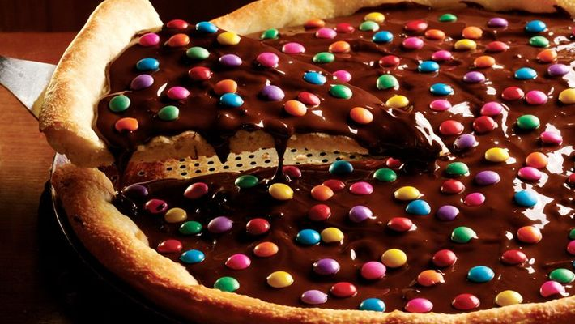

PIZZA DE CHOCOLATE

INGREDIENTES
MASSA:
- 1/2 kg de farinha
- 4 colheres de sopa de açúcar
- 1 colher de sobremesa de sal
- 2 ovos
- 1/2 pacotinho de fermento para pães
- 1 xícara de leite
- 1 xícara de óleo
COBERTURA DA PIZZA:
- 250 g de chocolate ao leite
- 1 pacotinho de castanhas torradas e moídas
MODO DE PREPARO
MASSA:
- Misture os ingredientes secos em um recipiente.
- Coloque então o leite morno e o óleo e misture a massa até ficar homogênea e não grudar nos dedos.
- Amasse até dar liga.
- Abra e corte em forma de circulo.
- Unte uma assadeira e asse a massa, tire do forno antes que ela doure, pois tem que ficar assada mas branquinha.
COBERTURA DA PIZZA:
- Derreta o chocolate em banho-maria (não pode cair nenhuma gota de água no chocolate).
- Depois que o chocolate derreter coloque na massa ainda quente.
- Salpique a castanha moída por cima e coloque para assar por 2 minutos para que o chocolate borbulhe.